Destaques da Semana
Guerra nos Cinemas: Superprodução quebra recordes e divide a opinião dos críticos
O mais novo blockbuster da temporada atingiu a marca histórica de 500 milhões de dólares em seu primeiro fim de semana. Enquanto o público lota as salas de cinema, os principais críticos do mercado debatem se o longa realmente entrega o que prometeu.
No termômetro dos principais agregadores de notas, a divergência é evidente. A produção recebeu elogios massivos pelos efeitos visuais de última geração e pela trilha sonora imersiva, mas enfrentou duras críticas em relação ao ritmo do roteiro no segundo ato.
Sucessos do Cinema - Lançamentos 2026
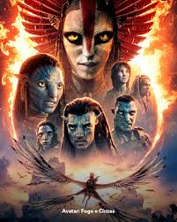
Avatar 3Avatar 3
Ficção Científica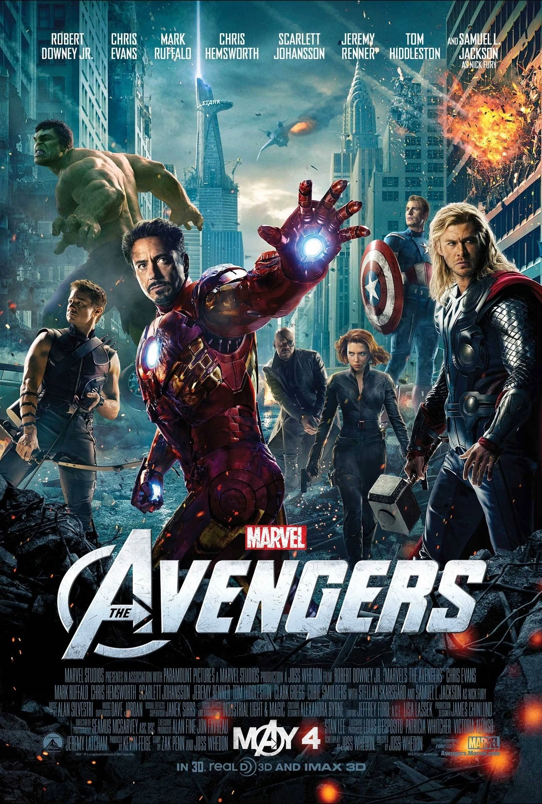
VingadoresVingadores
Heróis Mandalorian
MandalorianMandalorian
Aventura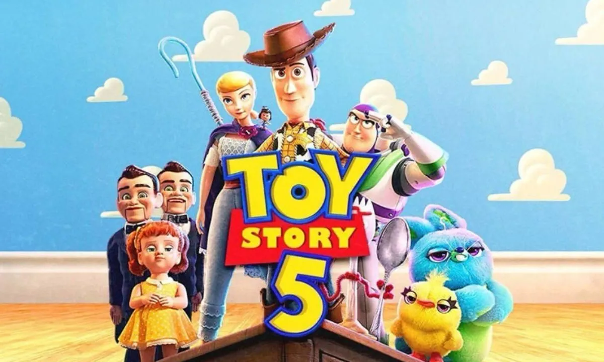
Toy Story 5Toy Story 5
Animação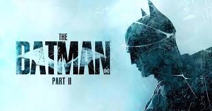
The Batman 2The Batman 2
PolicialSuper Mario 2
Super Mario 2
Animação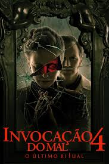
Invocação 4Invocação 4
Terror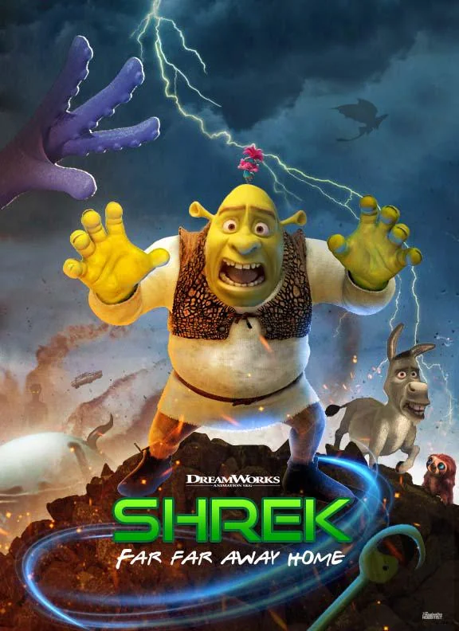
Shrek 5Shrek 5
Animação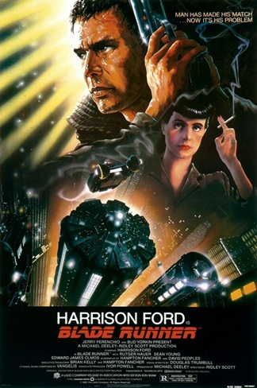
Blade RunnerBlade Runner
CyberpunkPiratas
Piratas
Ação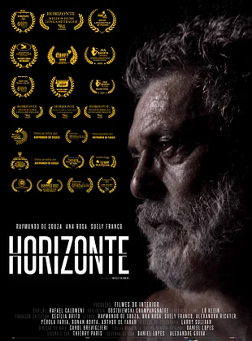
HorizonteHorizonte
Drama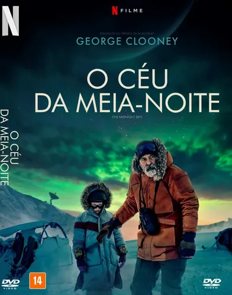
Eco Meia-NoiteEco Meia-Noite
SuspenseVelozes 11
Velozes 11
Ação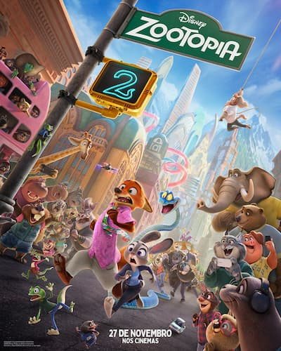
Zootopia 2Zootopia 2
Animação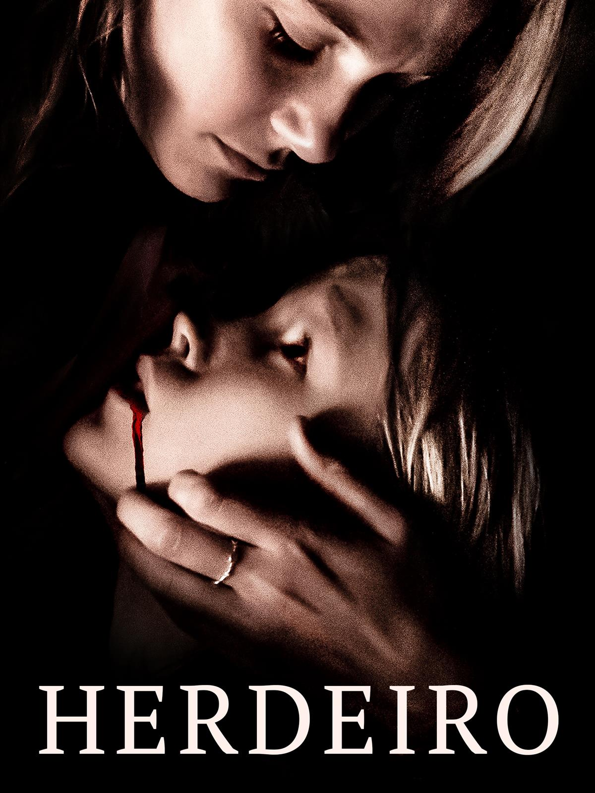
Herdeiros